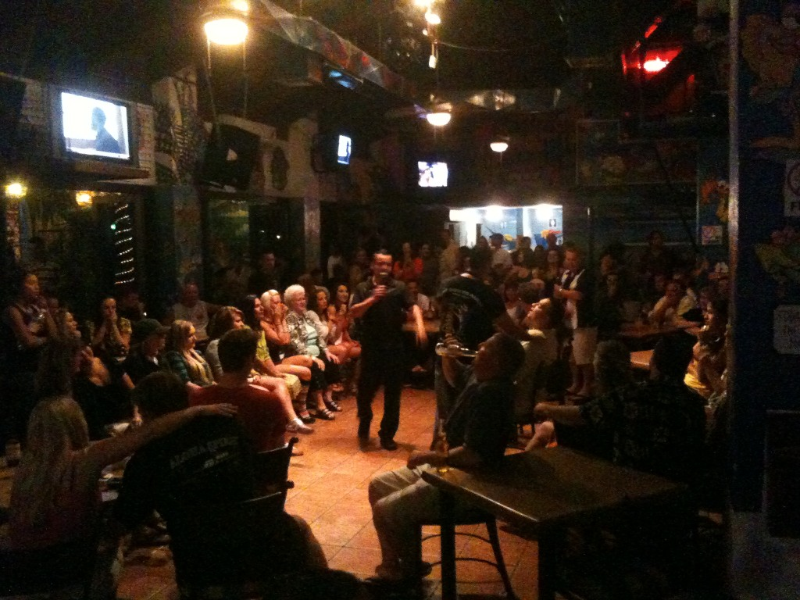

Socorro Islands
Index
Previous
151 of 152
Next
Rating: 0
Name: Socorro 2010-04-24 22-16-42
Date: 4/24/10 10:16:42 PM PDT
Aperture: ƒ/2.8
Shutter Speed: 1/10
ISO: ISO 1016
Focal Length: 3.8mm
Pixel Size: 2048 × 1536 (3.1 MP)
File Name: Socorro 2010-04-24 22-16-42.JPG
File Size: 1.21 MB
Camera Model: iPhone 3GS
Project Path: Socorro
Copyright Notice: Copyright 2010, Gregg Kellogg
